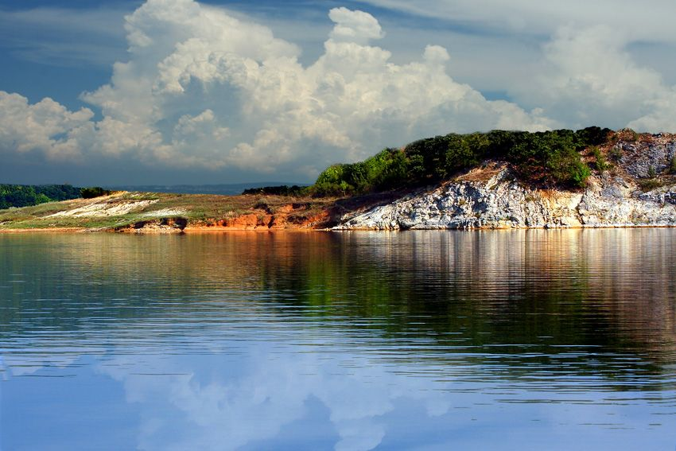

Последния язовир който ще разгледаме е язовир Цонево
Язовир „Цонево“ (през годините на социализма наричан „Георги Трайков“) е язовир в България, изграден на река Луда Камчия, в Източна Стара планина, област Варна. Намира се югозападно от село Цонево.
Проектната площ на язовира е 17,3 km², а обемът му - 330 млн. m³. В експлоатация е от 1974 г.
Изградена е земнонасипна стена. Многогодишен изравнител е на язовир „Камчия“ и река Луда Камчия. Използва се за промишлено водоснабдяване и напояване.
Обратно към главната страница